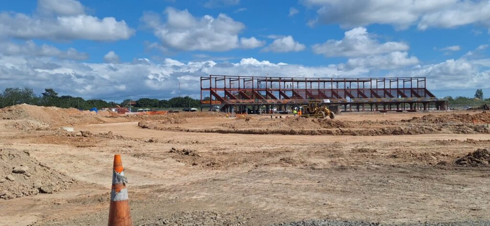
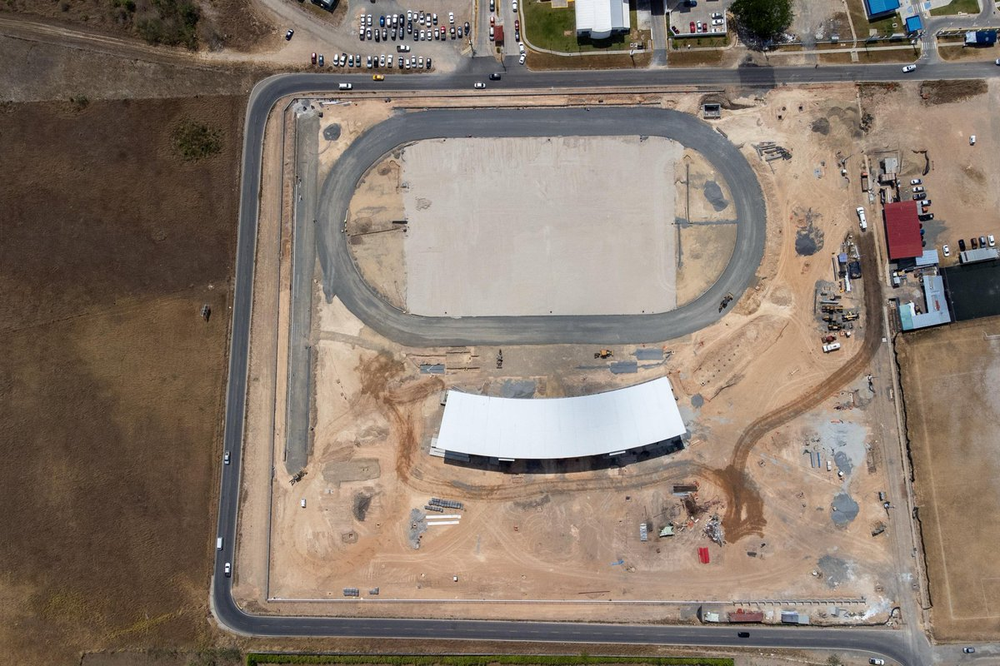
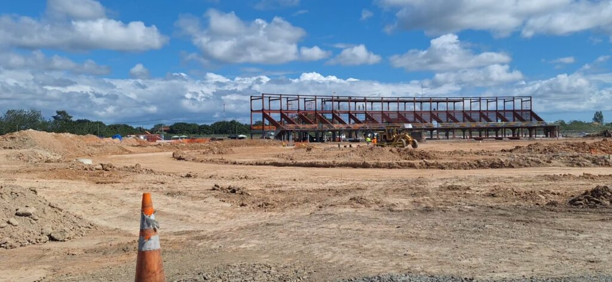
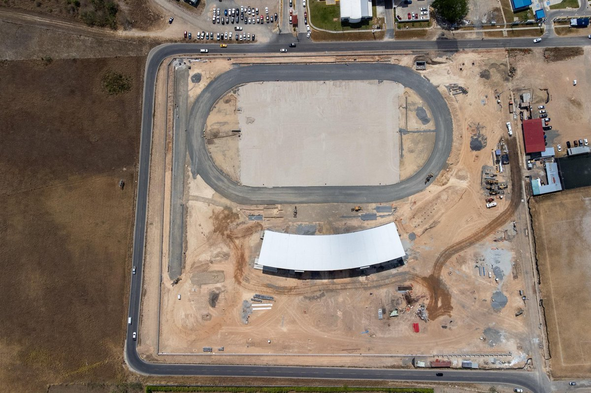

El Instituto Panameño de Deportes, construye en la provincia de Coclé, el nuevo y moderno estadio de Atletismo, la primera instalación en nuestro país, exclusiva para la práctica y competencia de los eventos de pista y campo.
La obra ubicada en la comunidad de Miraflores, en su primera fase, tiene un valor de contrato de B/15.4 millones de dólares, que incluye “Estudio, Diseño, Desarrollo de Planos, Construcción, Equipamiento y Financiamiento del Complejo Deportivo de Penonomé.
El proyecto tiene un estadio de Atletismo, calles y veredas de accesos, ciclo vías, sistema de iluminación, drenaje pluvial, conexión eléctrica, paisajismo, planta de tratamiento de aguas residuales, mobiliario urbano, tinaqueras, áreas de recolección de desechos y 120 estacionamientos.
Estadio de Atletismo “La Estrella de la Fase I”.
Los amantes de este deporte, podrán encontrar una instalación con altos estándares deportivos, una pista de tartán de 9 carriles de 400 metros y su pista de calentamiento de 6 carriles de 133 metros lineales.
Además, tendrá zonas de lanzamiento de jabalina, disco, martillo e impulso de bala (todo con grama natural) salto de longitud, triple salto y pértiga
Para la comodidad del público tendrá graderías con 1200 butacas, palcos, kioscos, taquillas y cabinas de transmisión.
La pista de atletismo estará certificada como CLASE II por la World Athletics (Federación Internacional de Atletismo), y se podrán realizar competiciones como campeonatos de zonas geográficas o meetings internacionales.
Libny Mendoza, del Consorcio Miraflores, es la ingeniera residente del proyecto, manifestó que la obra se encuentra en un 80% de avance físico y su entrega está contemplada entre los meses de mayo o junio.
El Instituto Panameño de Deportes, sigue trabajando por la masificación de todas las disciplinas deportivas en nuestro país y el bienestar de los atletas, por eso prepara un master plan para darle continuidad a este proyecto en una fase II que contemplaría un estadio de béisbol mayor y de Pequeñas Ligas, un Centro Acuático con Piscina Olímpica de 12 carriles con área de clavados y piscina de calentamiento semi-olímpica.

 


